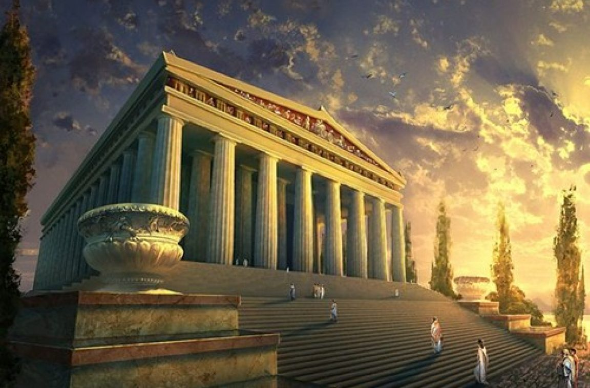

Đền Artemis được xây dựng vào khoảng năm 550 TCN, được xây dựng bằng đá cẩm thạch với vẻ đẹp tráng lệ và kích thước khác thường. Trải qua nhiều lần xây dựng lại và mở rộng, mãi đến năm 430 TCN, ngôi đền mới được hoàn thiện. Tuy vậy, ngôi đền hiện nay chỉ còn phần nền và một số phần đổ nát khác còn sót lại sau khi bị đốt dù được trùng tu lại.
Đền Artemis thường biết đến đền Artemis là một trong bảy kỳ quan từng tồn tại trong thế giới cổ đại, hay một công trình nằm giữa thành cổ Ephesus lộng lẫy và bí ẩn (hay Thổ Nhĩ Kì ngày nay). Đền có những cửa sổ lớn, trong đó cửa sổ ở giữa tạo ra một khoảng hở giúp những người viếng đền có thể nhìn thấy vị nữ thần Artemis – nữ thần săn bắn, con của thần Zeus và thần Lesto – trên bàn thờ.
Câu chuyện kẻ đốt đền:Chuyện kể rằng, vào một đêm hè của năm 356 TCN. Một ngọn lửa lớn bất ngờ cháy bùng lên ở đền Artemis, từ những món đồ cúng tế và đến bức màn che trước tượng thần. Ngọn lửa càng lúc càng lan tỏa, nhanh chóng cháy đến các cửa ra vào bằng gỗ tẩm dầu, rồi cháy lên mái nhà. Trong chốc lát, ngôi điện thờ duy nhất nằm trong 7 kỳ quan của cổ đại đã trở thành những đống đổ nát, khói lửa mịt mù, dưới bầu trời đen tối chỉ còn thấy nhô lên hình bóng những chiếc cột đá cẩm thạch. Sau vụ cháy lịch sử này, các nhà chức trách đã điều tra nguyên nhân và ngay lập tức xác định ra thủ phạm là một cái tên mãi mãi được lưu truyền về sau với biệt danh "kẻ đốt đền” - Herostratus.
